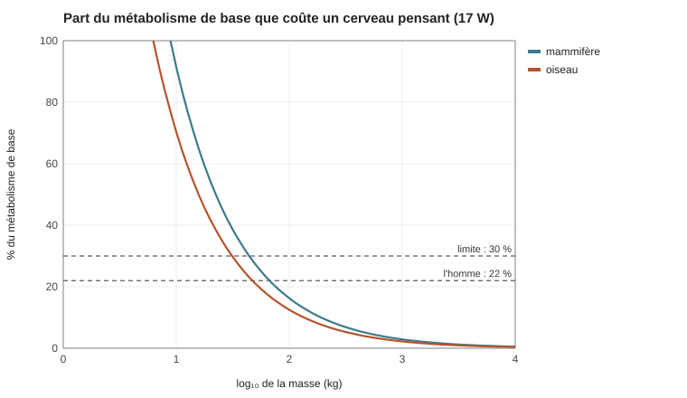
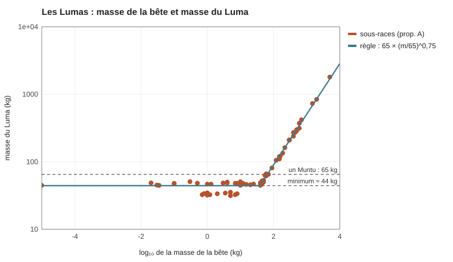

SIM-21 — Les Lumas, sous-race par sous-race
La question : à quoi ressemble chaque sous-race de Lumas, si l'on tire le hasard de la Mère et qu'on ne garde que ce que la physique permet ?
La règle : Kélia a modelé les Lumas sur les Muntu. Ils sont bipèdes, avec deux mains et deux pieds (ou des pattes) : c'est la part du Premier Fils, la logique. Le hasard de la Mère décide de ce qui reste de la bête : la tête, la peau, la queue, les traits (cornes, crinière, bec…), les pieds ou les pattes, la taille. Quatre exceptions : les Serpents, les Insectes et Araignées, les oiseaux (des bras à la place des ailes) et l'éléphant (1,5 à 2 t).
Le résultat, sous-race par sous-race, est dans BIO-008 Les Lumas, tribu par tribu.
Code : sim21_lumas.py.
1. La méthode
- Les sous-races : les Lumas comptent 67 sous-races, réparties en tribus. Les trois tribus de la côte sont les Tortues, les Poissons totémiques et les Hippopotames. Pour chaque sous-race, le modèle part de la bête d'origine : la masse, la classe, la façon de poser le pied, la couverture (poils, plumes, écailles…), ses traits marquants et sa queue.
- Le tirage, pour chaque sous-race :
| Ce qui est tiré | Les possibilités |
|---|---|
| La tête | tête de bête ; mi-bête (museau raccourci, front haut) ; visage proche des Muntu, aux traits de bête |
| La couverture | complète ; partielle (dos, épaules, avant-bras, crâne) ; presque nue, avec les motifs de la robe |
| Les traits de la bête | chacun est gardé six fois sur dix (crinière, cornes, griffes, bois…) ; le bec et le museau suivent la tête |
| La queue | gardée, raccourcie ou perdue (préhensile pour les singes) |
| Les mains | cinq doigts, quatre, ou trois et un pouce |
| Les pieds | fixés par l'ancêtre (voir § 2) ; pour les ongulés, sabots ou ongles épais |
| La taille | la règle du rapprochement (§ 2), à ± 10 % |
La graine du hasard est fixe : le même tirage revient à chaque lancement.
- Le classement : le modèle tire douze corps viables par sous-race et en retient un. Certains clans ont un rôle (Lion = royauté, Guépard = éclaireurs rapides, Python = prêtres, Vipère = assassins…). Le rôle classe les corps : un roi ou un prêtre a un visage qui se lit ; un éclaireur garde sa queue pour l'équilibre ; un assassin a un visage de serpent, qui ne trahit rien. Un corps gagne aussi des points s'il garde le trait emblématique de la bête (crinière, cornes, capuchon…), si son pelage suit le climat (complet au froid, ras ou partiel au chaud et sec) et, pour les nageurs, s'il garde sa queue.
2. Les règles physiques
Le prix de la raison. Un être qui pense a besoin d'environ 60 milliards de neurones, dont 12 dans le cortex (entre le gorille, 9, et l'homme, 16).
Un neurone coûte à peu près la même énergie chez toutes les espèces : ≈ 6 kcal par milliard de neurones et par jour (Herculano-Houzel, 2011). Le cerveau humain (86 milliards) consomme ≈ 20 W, soit 20 à 25 % du métabolisme de base d'un adulte. Le métabolisme de base suit la loi de Kleiber : ≈ 70 kcal/jour × masse^0,75 chez les mammifères (Kleiber, 1932).
- Le cerveau d'un Luma coûte ≈ 17 W. Il ne peut pas dépasser 30 % du métabolisme de base (l'homme est à 22 %).
- Il n'y a pas de petit Luma. Sous ≈ 44 kg (≈ 31 kg pour un oiseau, qui brûle plus à masse égale), un corps ne peut pas nourrir un cerveau pensant. Les petites lignées ont grandi.
- Le sang chaud est imposé aux lignées à sang froid (serpents, crocodiles, lézards, tortues, amphibiens, poissons, insectes) : un corps à sang froid brûle cinq à dix fois moins et ne pourrait pas nourrir ce cerveau.

Le rapprochement des tailles. Kélia voulait une race proche des Muntu : les tailles se resserrent vers les 65 kg d'un Muntu, sans s'effacer. La règle est m = 65 × (m_bête / 65)^0,75. L'exposant 0,75 est réglé pour que l'éléphant tombe à ≈ 1,7 t. Ce que ça donne : lion ≈ 135 kg, buffle ≈ 350 kg, ours brun ≈ 200 kg, rhinocéros ≈ 800 kg, éléphant ≈ 1,7 t.

La hauteur se déduit de la masse, pour un corps de forme Muntu (1,70 m pour 65 kg, à la puissance un tiers), un peu plus trapu au-delà de 300 kg. Un Luma lion mesure ≈ 2,2 m, un Luma buffle ≈ 2,7 m, un Luma éléphant ≈ 4,6 m.
Les pieds suivent l'ancêtre (anatomie réelle) :
| L'ancêtre marche… | Exemples | Le Luma a… |
|---|---|---|
| sur les doigts (digitigrade) | félins, canidés, hyènes | des pattes : jambe « à l'envers », coureur et sauteur |
| sur la plante (plantigrade) | ours, primates, rongeurs, hippopotames | des pieds : stable, bon porteur |
| sur des sabots (onguligrade) | bovidés, cervidés, éléphants, rhinocéros | des sabots ou des ongles épais : marcheur endurant, mauvais grimpeur |
| comme un oiseau | oiseaux | des pattes d'oiseau |
| pattes palmées | amphibiens, tortues, otaries, loutres, poissons-marcheurs | des pieds palmés |
Les autres règles :
- Se dresser : jamais au-delà de ≈ 3 t (les tyrannosaures, 7 à 8 t, avaient une queue en contrepoids). Avec le rapprochement, aucun Luma n'atteint cette limite.
- La voix : le Khodran est une langue de clics et de gestes, qui ne s'écrit pas (CIV-002 Les langues). Les Lumas parlent le Logar au quotidien et le Khodran entre tribus et pour les traités. Les mammifères font des clics. Les oiseaux imitent tous les sons. Les autres n'en font que si leur tête a changé ; sinon, ils parlent par gestes, grondements ou stridulations.
- La durée de vie suit la loi de Sacher, ancrée sur les Muntu (BIO-009 Les âges de la vie) : à cerveau égal, un corps plus lourd vit moins longtemps. Bonus de 1,5 pour les tortues et le rat-taupe nu ; l'éléphant garde son cerveau de 4,8 kg.
3. Les résultats
Sur les 69 lignées animales tirées (certaines tribus comptent plusieurs bêtes) :
| Lignées tirées | 69 |
| Ont dû grandir | 36 |
| Ont reçu le sang chaud | 20 |
Les Lumas vont de 31 kg (l'aigle royal) à 1,8 t (l'éléphant, ≈ 4,6 m).
Les grands herbivores n'ont pas besoin de cuire leur nourriture (BIO-005 Les races, biologie et apparence). Un cerveau de 17 W ne coûte que quelques pour cent du métabolisme d'un buffle ou d'un éléphant. Seuls les herbivores de taille moyenne (50 à 150 kg) doivent cuire ou faire fermenter.
4. Les limites
- La masse minimale dépend de la limite de 30 % (à 25 %, elle monte à ≈ 56 kg ; à 40 %, elle descend à ≈ 30 kg). L'exposant du rapprochement est un réglage.
- Les doublons (chacal, ours brun, loup, présents dans deux tribus) sont des lignées séparées, chacune avec son tirage.
- Herculano-Houzel (S.), Scaling of brain metabolism with a fixed energy budget per neuron, Frontiers in Neuroenergetics, 2011.
- Fonseca-Azevedo (K.) et Herculano-Houzel (S.), Metabolic constraint imposes tradeoff between body size and number of brain neurons in human evolution, PNAS, 2012.
- Kleiber (M.), Body size and metabolism, Hilgardia, 1932.
- Hutchinson (J. R.) et Garcia (M.), Tyrannosaurus was not a fast runner, Nature, 2002 (la limite des grands bipèdes).